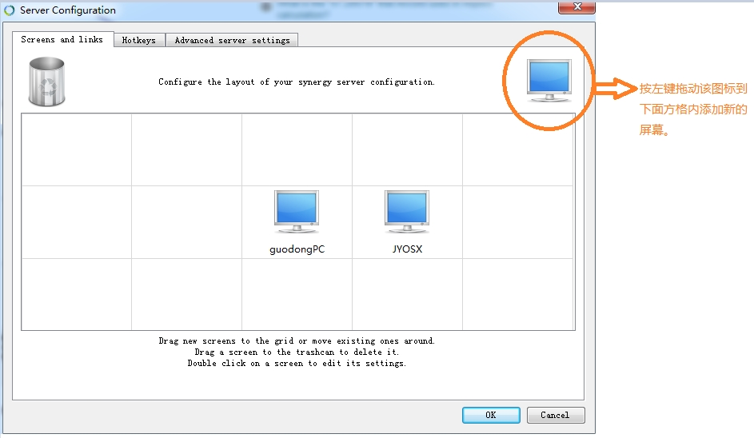

1 InitMyPC
1.1 目录结构
0 级目录 --0--guodong 1 级目录 --1--.emacs.d --1--.oh-my-zsh (window 系统无该目录) --1--Applications --1--Desktop --1--Documents --1--Downloads --1--Movie --1--Music --1--Pictures 2 级目录 Documents --2--MyCloud --2--MyResource --2--MyProject --2--MyCore --2--MyToolkit (this is a microsoft CodePlex svn project) --2--MyGTD (this is a bitbucket git project) 3 级目录 Documents--MyCloud --3--360Cloud --3--百度云同步盘 --3--快盘 --3--SkyDrive Documents--MyProject --3--Public --3--Private --3--SDK Documents--MyCore --3--Config --3--Resource --3--Document 4 级目录 Documents--MyProject--Public --4--wolfand11 [github-blog] --4--cocos2d (cocos2d-x_develop CocosBuilder_develop) --4--OpenSourceGame Documents--MyCloud--360Cloud --4--MyTestProject --4--MyResource
2 Cross Platform tools
当前主流的操作系统:windows、linux、osx，对于多平台用户来说在不同的平台使用不同的工具太麻烦了，通常更青睐跨平台的工具。下面是我使用的一些跨平台的工具,有些工具在平常很少用到，作为备份资料也记录下来方便使用的时候查看。
2.1 程序开发相关
2.1.1 编辑器
Emacs 绝对是跨平台编辑器中的王者。
2.1.2 C++跨平台开发框架
Qt 是我所熟悉的 C++跨平台框架。SDK 使用很方便，文档易懂。
Qt 在 Windows 系统上进行编译，需要在安装 VisualStudio 时选中安装 Visual C++；
Qt 在 Windows 系统上进行调试，需要按照 Debugging Tools for Windows/CDB 插件，该插件需要从 Windows 官网下载。
2.1.3 流程图、UML 图工具
Dia 是一款比较全面的作图工具。
Graphviz 用来做数据结构图，流程图，状态图等比较方便。
2.1.4 思维导图工具
XMind 是用 Java 实现的跨平台思维导图工具，还有一款开源的 freemind 工具也是跨平台的。
2.1.5 Web 服务器搭建
xampp 可用来搭建 web 服务器。
修改默认的 Web 容器路径的方法
打开 xampp\apache\conf\httpd.conf 文件，进行如下修改
#DocumentRoot "C:/xampp/htdocs" #<Directory "C:/xampp/htdocs"> DocumentRoot "D:\Documents\MyWeb" <Directory "D:/Documents/MyWeb">
2.2 常用工具
2.2.1 音乐播放器
2.2.2 电子书管理软件
2.2.3 文档格式转换软件
- Pandoc
- 使用方法
pandoc tmp.org -o tmp.md
- pandoc.exe: Cannot decode byte '\xcd': Data.Text.Internal.Encoding.Fusion.streamUtf8: Invalid UTF-8 stream
将文件转化为 utf-8 格式后再进行处理。
- pandoc.exe 导出中文 md 为 pdf
- ! Package inputenc Error: Unicode char 目 (U+76EE)
pandoc 拼界面文档.md -o 拼界面文档.pdf --latex-engine=xelatex
- 导出文件中中文不显示
pandoc 拼界面文档.md -o 拼界面文档.pdf --latex-engine=xelatex --variable mainfont="微软雅黑"
- 导出文件中部分中文不显示
pandoc 拼界面文档.md -o 拼界面文档.pdf --latex-engine=xelatex --variable mainfont="微软雅黑" --variable sansfont="微软雅黑" --variable monofont="微软雅黑"
- ! Package inputenc Error: Unicode char 目 (U+76EE)
- 使用方法
2.3 系统安装
2.3.1 U 盘启动盘制作工具
UNetbootin 是一款跨平台的 U 盘制作工具。这种类型(安装系统)的工具一定要选跨平台啊!
2.4 系统工具
2.4.1 鼠标键盘控制
synergy 使用一个鼠标键盘控制多台电脑。
synergy 配置方法

https://superuser.com/questions/575096/synergy-1-4-10-unrecognised-client-name-apnanll3m4335-check-server-config
2.4.2 护眼软件
3 Init Mac
OSX 系统还是比较傻瓜的，基本上和 windows 差不多，尤其是 appstore 推出以后，基本上不需要
对系统进行什么配置。下面记录下来我所使用的一些软件等等
3.0.1 NTFS 磁盘工具
默认情况下，在 mac 系统中，不能直接对 ntfs 文件系统进行写操作，[[link]OSXFuse]是一款开
源的免费工具，用来打破这种限制。
3.0.2 EverNote
最近一直在使用 EverNote，这是一款多平台(硬件平台、操作系统平台)的笔记软件，所以使用比
较方便。我主要用 EverNote 来做下面这些事情:
- 记录自己偶然想到的问题
- 记录自己最近想思考的问题，随后会在空闲的时间把零碎的思考写下来，为要思考的问题列出
一个提纲来。等自己的思考成熟以后再将该问题写成博客，系统地记录下来。
3.0.3 GitHub
使用 GitHub 来方便的在多台设备上访问自己的文档。我的计划是将自己常用的文档放在 GitHub
上面，比如:工具使用文档，操作系统配置文档。
3.0.4 SourceTree
版本管理的客户端，支持 svn、git、mercurial。
3.0.5 MacPorts
之前用 ubuntu 一直用 apt-get 觉得很方便，到了 mac 下以后很多软件包的安装、管理很麻烦。MacPorts
就是我要找的 mac 下的 apt-get
注意: 安装完毕以后，如果发现 port 命令不存在，请修改 PATH 环境变量如下: export PATH=$PATH:/opt/local/bin:/opt/local/sbin
3.0.6 brew
brew 和 MacPorts 功能一样。
brew 项目地址：https://github.com/Homebrew/brew/
3.0.7 Mac 下的远程桌面
TeamViewer 可用来远程桌面。
3.0.8 键盘改键
Karabiner
https://pqrs.org/osx/karabiner/index.html.en
Seil: change CapsLock key
https://pqrs.org/osx/karabiner/seil.html
OSX 系统改键
SystemPreferences->Keyboard->ModifyKeys
3.0.9 Alfred
和 windows 下的 Listary 功能类似
4 Init Windows
4.1 加速 windows
4.2 键盘改键
AutoHotkey
http://www.autohotkey.com/
4.3 Listary
和 osx 下的 Alfred 功能类似
Ctrl-Ctrl invoke Lisary
4.5 windows shell
该工具集成了 cygwin，oh-my-shell
http://babun.github.io/
安装方法：
下载安装包解压，执行下面命令，/t 表示安装路径。
install.bat /t "D:\target_folder"
4.6 Error Fixed
4.6.1 通过 host 名称访问 pc 失败
ping your-host-name 如果发现 ping 到的 ip 地址为 ipv6，那么可以将 pc 的 ipv6 协议禁止来解决该问题。
5 Init Ubuntu
重新安装 Ubuntu 以后 该做的 事情。(这个文档是大学那会儿[2006-2010]写的，估计现在有很多都变了吧)
5.1 最重要的事情
5.1.1 首先：
自动挂载 Resourse 分区(就是你存储资源的那个分区)。挂载方法参看下面文中所介绍的方法：
《ununtu 自动挂载分区》 http://hi.baidu.com/wolfand11/blog/item/a2629eee6e9ff5f1b3fb9597.html
一般，我会在自己的用户目录下创建一个 Resourse 目录，然后将分区挂载在该目录下。
（ /dev/sda6 /home/smile/Resource ext4 defaults 0 0）
5.1.2 其次：
设置桌面等的路径，设置方法看下面文中所介绍的方法：
《转》改变 Ubuntu 桌面所在文件夹 http://hi.baidu.com/wolfand11/blog/item/b4bbe21f7a6659c4a68669cb.html
一般，我自己的资源分区中都会创建 Desktop、Documents、Downloads、Music、Pictures、Public、Templates、Videos
等目录，我会将系统默认的路径改为 Resourse 下面的对应的路径。（我为什么要这么做呢？:-) 有一次忘记备份桌面的资料，就
重新装系统了，后果可想而知。如果修改这些默认路径，就会将资料都保存在我的 Resourse 分区中了）。下面是我的设置代码：
XDG_DESKTOP_DIR="$HOME/Resource/Desktop/"
XDG_DOCUMENTS_DIR="$HOME/Resource/Documents"
XDG_DOWNLOAD_DIR="$HOME/Resource/Downloads/"
XDG_MUSIC_DIR="$HOME/Resource/Music"
XDG_PICTURES_DIR="$HOME/Resource/Pictures"
XDG_PUBLICSHARE_DIR="$HOME/Resource/Public"
XDG_TEMPLATES_DIR="$HOME/Resource/Templates"
XDG_VIDEOS_DIR="$HOME/Resource/Videos"
5.2 环境配置软件安装
5.2.1 安装、配置编译环境
刚装好的系统中已经有 GCC 了，但是这个 GCC 什么文件都不能编译，因为没有一些必须的头文件，所以要安装 build-essential 这个软件 包，安装了这个包会自动安装上 g++,libc6-dev,l inux -libc-dev,libstdc++6-4.1-dev 等一些必须的软件和头文件的库。可以在新立得里面搜索 build-essential
5.2.2 配置 Terminal
使其符合自己使用习惯
参考左边链接配置方法：http://hi.baidu.com/wolfand11/blog/item/bde7741b85ff6c158718bfd5.html
5.2.3 安装配置 QtCreator
直接在 Ubuntu Software Center 中搜索安装
（1）、设置代码自动补全快捷键为 Shift+f；
在 QtCreator 进入 Tool 菜单中 Option，选择 Environment/Keyboard,在右边对话框中找到
TextEditor.CompleteThis 选项进行设置。
（2）、设置字体大小（对眼睛有好处）；
（3）、修改 Qt 中 example 文件夹的访问权限，sudo chmod -R 777 examples
5.2.4 安装配置 BoUML（UML 工具）
直接在 Ubuntu Software Center 中搜索安装
5.2.5 安装 Amaya
http://www.w3.org/Amaya/Overview.html%EF%BC%88Amaya 官网）
Amaya 是 一个具有浏览功能的 WEB 开发工具，是由万维网协会（W3C）成员开发的一个网络浏览器，同时也可以作为对 W3C 成果的测试工具。Amaya 包括了一个 HTML 编辑器和浏览器，用户可以免费到 W3C 的网站下载它，在 linux 和 windows 下都有对应的版本。Amaya 起初只支持 HTML 和 CSS 的编 缉，现在已经添加了对 XML、XHTML、MathML、SVG 等的支持。
5.2.6 安装 VirtualBox（虚拟机）
直接在 Ubuntu Software Center 中搜索安装
5.2.7 安装 StarDict（Linux 下的金山词霸）
直接在 Ubuntu Software Center 中搜索安装
5.2.8 安装 iptux（linux 下的飞鸽）
直接在 Ubuntu Software Center 中搜索安装
5.2.9 安装 libfetion
（Linux 下的飞信）http://www.libfetion.org/
5.2.10 安装 Kchmiewer
这个是 kde 下出色一个 chm 阅读器，相比较于 chmsee 出现中文乱马的情况而言，这个可以说是完美了。
安装：sudo apt-get install kchmviewer
5.2.11 安装 XMind
XMIND 是一款非常实用的商业思维导图（Mindmap）软件，应用全球最先进 的 Eclipse RCP 软件架构，全力打造易用、高效的可视化思维软件，强调软件的可扩展、跨平台、稳定性和性能，致力于使用先进的软件技术帮助用户真正意义上提高生产率。
5.2.12 修改最大化、最小化、关闭按钮的位置。
请参考<转>如何将 Ubuntu 10.04 LTS 的窗口控制按钮从左上角调整到右上角
http://hi.baidu.com/wolfand11/blog/item/1adac00879b1983ce82488e8.html
5.2.13 设置 Ibus
如果你是 KUbuntu 那么你要安装 ibus-gtk,这样才能在 Gnome 的软件中输入中文。
如果你是 Ubuntu 那么你要安装 ibus-qt4，这样你才能在 KDE 的软件中输入中文。
设置 ibus 启动项，System –> Perference –> Startup Applications –> add —> Name: ibus-daemon Command : /usr/bin/ibus-daemon -d –> Save
5.2.14 设置桌面图标
ubuntu 如何让桌面显示“我的电脑”及去掉桌面上的“磁盘图标”
http://hi.baidu.com/wolfand11/blog/item/4f1ab1097a86afbe2fddd4d3.html?timeStamp=1290957426596
5.2.15 rar 软件
ubuntu 压缩文件为 rar 格式与解压 rar 格式文件
- 安装 rar 与 unrar 方法：
sudo apt-get install rar
sudo apt-get install unrar - 简单的使用方法：
压缩文件为 rar 格式
例:rar a test.rar file1.txt 若 test.rar 文件不存在，则打包 file1.txt 文件成 test.rar 例:rar a test.rar file2.txt 若 test.rar 文件已经存在，则添加 file2.txt 文件到 test.rar 中
解压 rar 文件
例：unrar x -o- -y test.rar /home/test/ 将 test.rar 解压到/home/test/ 目录下。 例：unrar e-o- -y test.rar 将 test.rar 解压到当前目录下。